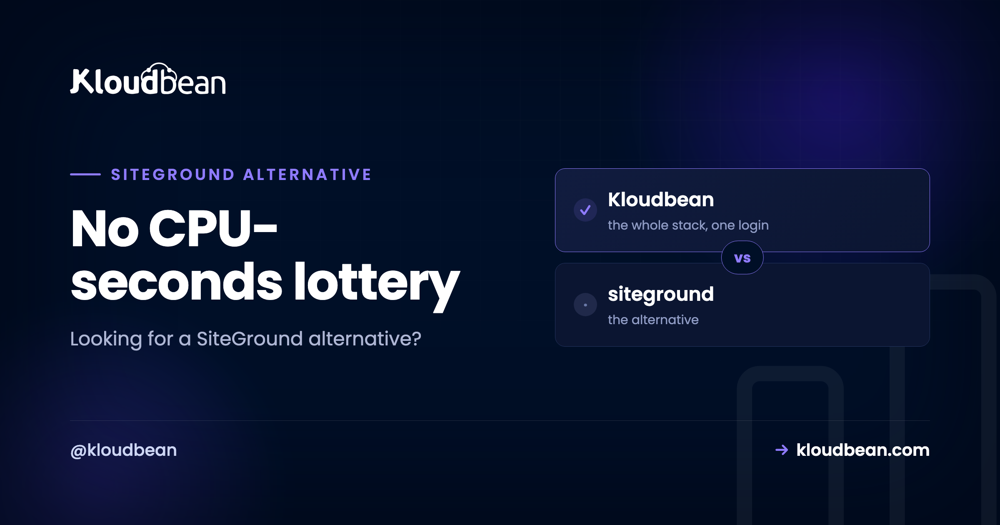
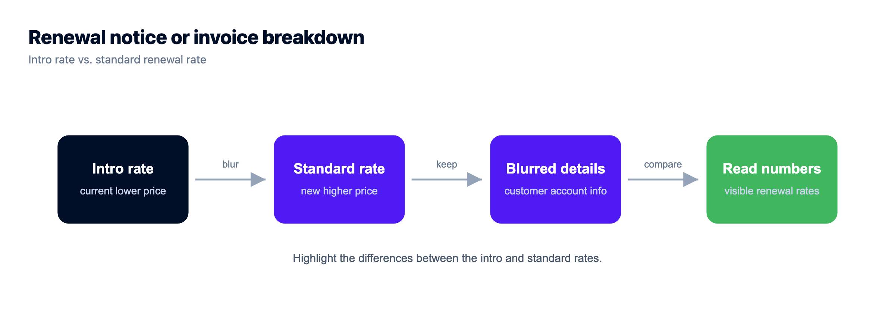
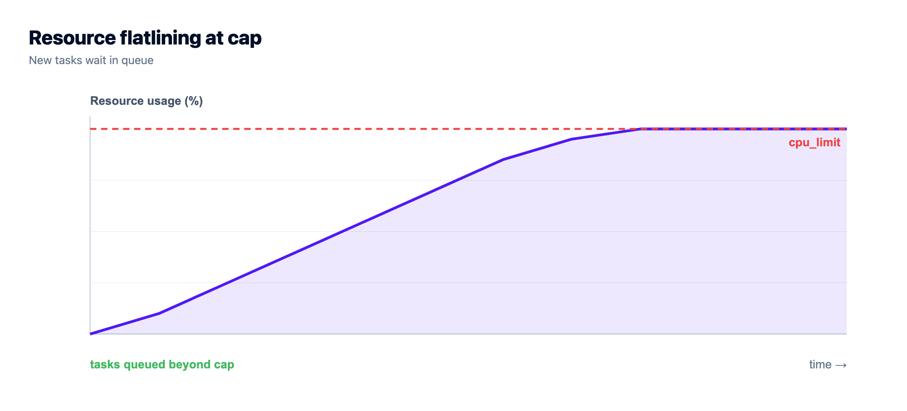
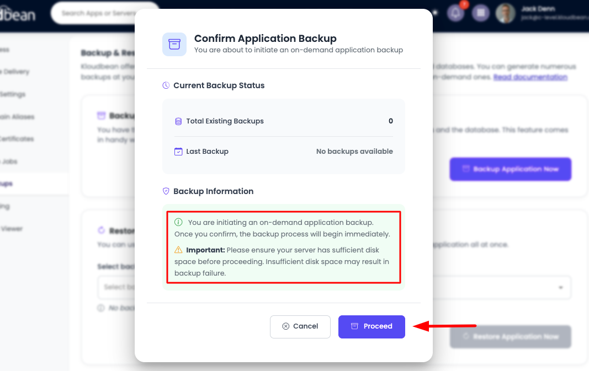
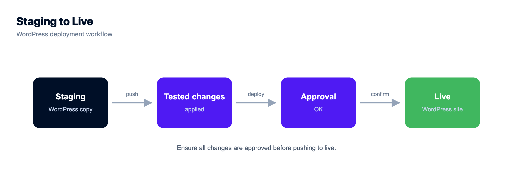
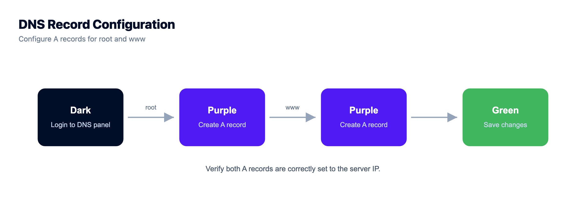

The SiteGround Alternative for When Renewal Prices and CPU Limits Start to Bite

SiteGround runs a tight ship. Fast servers, a clean dashboard, and WordPress support that actually knows WordPress. So why do so many people end up searching for a SiteGround alternative? Two numbers, usually. The renewal price that lands two or three times higher than the intro rate, and the CPU-seconds limit that throttles your site the moment real traffic shows up. If either has bitten you, this guide is about the move that fixes both: managed cloud, where you rent your own dedicated server resources, not a slice of a shared box metered by the second.
SiteGround is a polished managed WordPress host, and for a small, quiet site the entry plan is genuinely fine. The friction shows up later: when the promo term ends and the renewal price jumps, or a busy day pushes you past the CPU-seconds cap and your site gets throttled. A SiteGround alternative built on managed cloud gives you your own dedicated CPU and RAM (resize as you grow), 7 managed database engines, Git deploy, and staging, from $8/mo. Keep your domain and point DNS.
Why people start hunting for a SiteGround alternative
Most people don't leave SiteGround because they hate it. They leave because of two predictable moments: a billing email, and a slow afternoon that turns into an error page. Neither is a mystery once you see how shared hosting is priced and metered, so let's take them one at a time.
The renewal price jump nobody budgets for
SiteGround's headline prices are promotional. You sign up at a friendly intro rate, the first term feels like a bargain, then the renewal arrives at the standard rate, often two to three times what you paid the first year. Multiply that by a few sites and the bill people once called cheap starts to sting.
This is the honest reason "SiteGround too expensive" is such a common search. The product didn't change, the price did. And because the renewal is tied to a shared plan, paying more doesn't buy a different machine, just the same metered model at full freight. When the SiteGround renewal price is what pushes you to look around, the fix isn't a cheaper shared plan somewhere else. It's a pricing model that doesn't reset every year.

SiteGround CPU seconds, and why busy sites hit the cap
Here's the part that catches people off guard. Every SiteGround plan comes with a "server resources" budget, and the headline meter is CPU seconds. Think of a CPU second as one second of processor time your site is allowed to consume. Each plan tier gets a monthly and a daily allowance, plus limits on concurrent processes, script executions, and monthly visits. It's how shared hosting keeps one busy account from hurting the neighbors on the same machine.
The trouble is that a growing site burns CPU seconds fast. An uncached WooCommerce checkout, a heavy plugin on every page load, a bot crawl, a spike from a good newsletter, all of it eats the budget. Cross the SiteGround CPU seconds limit and the platform starts protecting the box: your site slows, queues requests, or returns errors while the account is throttled. You often find out from a resource-usage warning, not a happy customer.
None of this means SiteGround is doing anything wrong. Metering is how any shared host survives. But your ceiling is set by a budget you can't see in real time. That's the resource lottery: your site runs fine until the day it doesn't, and that day is usually the day traffic finally arrives.
Storage caps and the monthly visit ceiling
The third pinch is quieter. Shared plans cap storage (the entry tier fills up fast once a media library or a store grows) and they cap monthly visits. Blow past the visit ceiling and you're nudged to the next tier up, which loops right back to the renewal-price conversation. A site that's actually succeeding is the one that trips all three limits at once.
Where SiteGround genuinely earns its keep
Fair is fair. SiteGround has one of the cleaner control panels in shared hosting, its WordPress support is knowledgeable and quick, and it bundles a CDN and caching that make a small site feel snappy. If you run a single low-traffic site inside your intro term, you probably don't need to move today. This isn't a takedown, it's a guide for when SiteGround's model stops fitting what you've built.
A metered shared plan vs your own engine
The clearest way to see the difference is to picture what you're renting. On SiteGround you rent a share of a machine, and a meter decides how much you may use before you're throttled. On managed cloud you rent the engine itself: dedicated CPU and RAM that stay yours until you resize them. Same job, very different ceiling.
SiteGround vs managed cloud, row by row
A fair side-by-side. SiteGround wins a couple of rows on purpose, and I've kept those honest rather than pretending otherwise.
| SiteGround (shared / managed WP) | Kloudbean managed cloud | |
|---|---|---|
| Resources | Shared machine, CPU-seconds and process caps | Your own dedicated CPU and RAM, not metered by the second |
| Root / SSH | Limited shell, no real root | Full root and SSH access |
| Managed databases | MySQL only | 7 engines: MySQL, MariaDB, PostgreSQL, Redis, Memcached, Elasticsearch, MongoDB |
| Git deploy | Git on higher tiers, manual pull | Managed CI/CD from GitHub, build and deploy on push, live build logs |
| Staging | Yes, on GrowBig and GoGeek tiers | Staging for WordPress and Laravel |
| Scaling / resize | Jump plan tiers, then a shared ceiling | Resize your server's CPU and RAM when you need more |
| Runtimes | PHP-centric (WordPress focus) | PHP, Node.js, Python, Ruby, Java, plus free static sites, on Linux |
| Pricing model | Low intro rate, higher standard renewal | From $8/mo, priced by server size, no promo-to-renewal jump |
| Edge / CDN | CDN and caching bundled in | Cloudflare available as a paid add-on (free on Enterprise) |
Read the last two rows plainly. SiteGround bundles a CDN, a real convenience, and its intro price is genuinely low for year one. The managed-cloud trade is a flatter, more predictable bill and a server whose limits you set, not a meter that sets them for you. That's the SiteGround vs managed cloud decision in a line.

What actually changes on your own cloud server
Moving to managed cloud sounds like more work. It's the opposite, if you pick the managed kind. You get the dedicated resources of a server without becoming the person who patches it at midnight.
There are two ways off a metered shared plan, and the difference matters. A raw VPS hands you a bare Linux box: cheaper on paper, but now you own the OS updates, the web server config, the firewall, SSL renewals, and the pager when it breaks. Managed cloud gives you the same dedicated box with the OS, stack, SSL, patching, and backups handled for you. If you've never wanted to hand-tune an nginx config at 2am, that's the lane you want. The full comparison lives in managed vs unmanaged hosting, and what is a managed server covers exactly what "managed" includes.
My honest opinion, after plenty of these moves: most people leaving SiteGround don't want a bare Ubuntu box and a lost weekend. They want the site to stop hitting a wall and the bill to stop surprising them. Managed cloud gets you both.
How to move WordPress off SiteGround
The move is calmer than it sounds, and you can do it without a terminal marathon. It's the most common route we see, because people looking to move WordPress off SiteGround are chasing headroom, not a new hobby.
1. Launch your own server
Seven providers to choose from, a region near your readers, and a size you can change later. That's your dedicated box, with CPU and RAM that belong to you, not a slice you fight a meter for. You can resize it later, so don't overthink the first pick.

2. Add your application
Add the app you're moving. WordPress, WooCommerce, Laravel, Magento, Drupal and Joomla all launch from a tile. Not on PHP? Node.js, Python, Ruby, and Java run here as first-class citizens, and static sites host free. That range is something a WordPress-focused shared plan rarely gives you.

3. Bring your site across
Two ways. If it's a WordPress or PHP site, the free migration assistance moves it for you, files and database included, so you're not exporting SQL by hand. If your code lives in Git, connect the repo and let managed CI/CD build and deploy on every push, with live build logs you can watch in the console. Details are in the Git deploy guide.

4. Confirm backups and staging
Automatic backups are on by default, and you can restore from one when you need it. If an update has ever cost you an afternoon, the reason is obvious. Staging is there for WordPress and Laravel too, so you test risky changes on a copy before they hit the live site. The server backups guide covers how restores work.


Cut over without downtime: point your DNS
You don't transfer your domain to move your hosting. Wherever it's registered, you leave it there and point its DNS at the new server. If your domain and DNS sit inside SiteGround, move the DNS zone to your registrar or keep managing it, then set an A record for the root and one for www at your server's IP:
# DNS records (SiteGround Site Tools -> Domain -> DNS Zone Editor,
# or your registrar's DNS panel)
# Type Name Value TTL
# A @ 203.0.113.42 300
# A www 203.0.113.42 300
# The same records in zone-file form:
example.com. 300 IN A 203.0.113.42
www.example.com. 300 IN A 203.0.113.42Drop the TTL to 300 seconds a day before you cut over so the change propagates quickly. Migrate and test on the new server first, and only switch the A records when you're happy, so traffic moves on your schedule. Because the domain name doesn't change, a WordPress move needs no search-and-replace across the database. Once DNS points at the new box, request a free SSL certificate and you're on HTTPS.

The honest trade-offs
Straight talk, because fair cuts both ways. Kloudbean isn't a domain registrar, so buying a domain and hosting in one checkout is a workflow you give up (you point DNS instead). It isn't a $3 shared plan either. If your site is a single quiet page inside its intro term, SiteGround is cheaper today, so stay. Kloudbean is Linux managed cloud from $8/mo, for sites that have outgrown a metered shared plan, with the server, stack, SSL, backups, and patching handled for you while your code and data stay yours. Automatic scaling across servers is an enterprise feature, so for most people scaling just means resizing your server, which is a click, not a migration.
Weighing this against other budget hosts too? The same logic runs through our Namecheap alternative and GoDaddy alternative pieces, and there's a WordPress-specific walkthrough in managed WordPress hosting.
Move it once. Own it after.
Migration assistance is free and there is a free trial to prove the setup first. You keep Git-based deploys, get managed databases beside the app, and pay a flat monthly price on the cloud you choose.
- ✓ Free migration assistance
- ✓ Free trial
- ✓ Seven cloud providers
- ✓ Flat monthly price
- ✓ Managed databases
- ✓ Git deploy
Plans from $8/mo · Free migration assistance · Free trial
SiteGround alternative FAQ
Why does SiteGround get so expensive?
The headline price is promotional. You pay a low intro rate for the first term, then it renews at the standard rate, often two to three times higher. Nothing about the server changes, only the price, which is why renewal is when many people start shopping around.
What are SiteGround CPU seconds?
A CPU second is one second of processor time your site may use, and each plan gets a monthly and daily allowance plus limits on processes and executions. It's how shared hosting stops one busy account from slowing the whole machine. Cross the SiteGround CPU seconds limit and your site gets throttled or returns resource-limit errors until usage drops.
Can I move my WordPress site off SiteGround?
Yes, and it's the most common move we see. The WordPress and WooCommerce stacks are one-click, with migration assistance for the move itself. You keep the same domain, so there's no URL rewrite across the database, and staging is there to test first.
Is managed cloud better than SiteGround?
If you're hitting CPU-seconds throttling or wincing at the renewal price, then for you, yes. You get dedicated CPU and RAM instead of a metered share, plus managed databases, Git deploy, and staging. If your site is tiny and still on its intro rate, SiteGround is cheaper today, so there's no rush.
Does Kloudbean have staging like SiteGround?
Yes. Staging is available for WordPress and Laravel, so you test plugin updates, theme changes, or code on a copy before pushing live. SiteGround offers staging on its higher tiers too, so this is closer to parity than an upgrade, but you get it alongside your own dedicated resources.
Will I lose my domain or email if I leave SiteGround?
No. Your domain stays registered wherever it is, and you just point its DNS at the new server. If email runs through a separate provider it keeps working untouched, and if it's hosted at SiteGround, plan that piece separately, since Kloudbean is app and site hosting, not a mailbox provider.
Do I need to be a sysadmin to run a managed cloud server?
No, that's the point of managed cloud. The platform handles the operating system, stack, SSL, patching, and backups, so you get a dedicated server without the server chores. You have root and SSH if you want them, but you're never required to touch either.
Is Kloudbean more expensive than SiteGround?
In year one, SiteGround's intro price is usually lower. Kloudbean starts from $8/mo and is priced by server size, with no promo-to-renewal jump, so the gap narrows or flips once SiteGround renews. Look at the live pricing page before you commit.
Does Kloudbean include a CDN like SiteGround?
SiteGround bundles a CDN and caching, a genuine convenience. On Kloudbean, Cloudflare is available as a paid add-on, and it's included for Enterprise. So the CDN is there for edge caching, just as a separate choice rather than baked in.
How do I avoid downtime when moving off SiteGround?
Migrate first and switch DNS last. Copy the site over, test it on a temporary URL, and only point the A records once it looks right. Lower your TTL a day ahead so the change propagates fast, and traffic moves cleanly on your schedule.